6 拆分操作型数据
10 月 7 日，星期四，08:55
Sysops Squad 应用已经成功拆成独立部署的领域服务，Addison 和 Austen 都意识到，是时候考虑拆分 Sysops Squad 的单体数据库了。Addison 同意负责启动这项工作，Austen 则开始改进 CI/CD 部署流水线。Addison 与 Sysops Squad 数据架构师 Dana，以及为 Penultimate Electronics 数据库提供支持的 DBA Devon 开会讨论。
“我想听听你们的意见，看看应该怎样拆分 Sysops Squad 数据库。”Addison 说。
“等一下，”Dana 说，“谁说过要拆数据库？”
“Addison 和我上周已经商定，需要拆分 Sysops Squad 数据库，”Devon 说，“你知道，Sysops Squad 应用正在经历一次大规模改造，拆分数据也是这次改造的一部分。”
“我觉得单体数据库现在就很好，”Dana 说，“看不出有什么理由拆分它。除非你们能说服我，否则我不会在这件事上让步。况且，你们知道拆分这个数据库有多困难吗？”
“当然会很困难，”Devon 说，“不过我知道一个五步流程，它利用所谓的数据领域，非常适合这个数据库。这样，我们甚至可以开始研究为应用某些部分采用不同类型的数据库，例如知识库，甚至客户调查功能。”
“我们先别操之过急，”Dana 说，“而且不要忘了，最终由我负责所有这些数据库。”
Addison 很快意识到局面正在失控，于是立刻运用关键的谈判与协调技巧。“好吧，”Addison 说，“最初讨论时我们确实应该邀请你参加，我为此道歉。我本该做得更好。要怎样才能让你支持这项工作，帮助我们分解 Sysops Squad 数据库？”
“很简单，”Dana 说，“说服我 Sysops Squad 数据库确实需要拆分，给出充分有力的理由。只要你们能做到，我们就讨论 Devon 的五步流程。否则，数据库保持原状。”
拆分数据库十分困难，事实上比拆分应用功能困难得多。数据通常是企业最重要的资产，因此拆分或重构数据会带来更大的业务和应用中断风险。数据还往往与应用功能高度耦合，使人更难在大型数据模型中识别定义良好的接缝。
正如单体应用有时需要拆成独立部署单元，单体数据库有时也值得，甚至必须拆分。微服务等架构风格要求拆分数据，形成定义良好的限界上下文，让每项服务拥有自己的数据；基于服务架构等其他分布式架构则允许服务共享单一数据库。
有趣的是，拆分应用功能所用的一些技术，也可以应用于数据拆分。例如，组件对应数据领域，类文件对应数据库表，类之间的耦合点则对应外键、视图、触发器甚至存储过程等数据库制品。
本章将探讨推动数据分解的因素，并介绍如何采用迭代、可控的方式，把单体数据有效拆成独立的数据领域、模式，乃至独立数据库。数据库世界并不只有关系型数据库，因此我们还会讨论关系型、图、文档、键值、列式、NewSQL 和云原生等多种数据库，并概述每种类型的权衡。
6.1 数据分解驱动因素
拆分单体数据库可能是一项艰巨任务，因此必须了解是否应该，以及何时应该分解数据库，如图 图 6.1 所示。架构师可以通过理解和分析数据解聚因素与数据聚合因素，为数据分解提供依据。前者是支持拆分数据的驱动因素，后者则支持把数据保留在一起。在这两股力量之间取得平衡，并分析各自权衡，是确定正确数据粒度的关键。
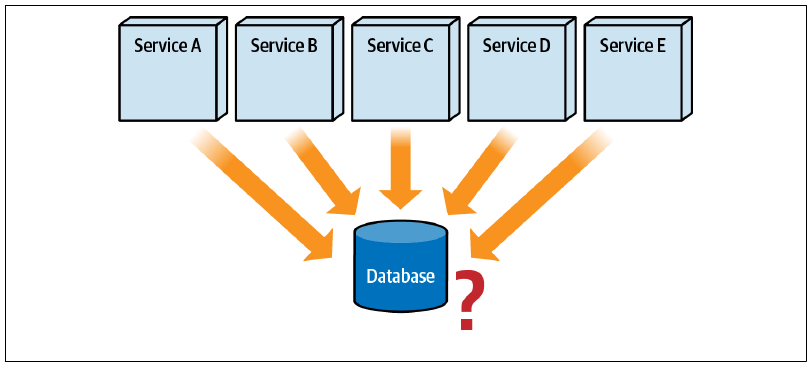
本节将探讨数据解聚因素和数据聚合因素，帮助架构师在考虑拆分单体数据时作出正确选择。
6.1.1 数据解聚因素
数据解聚驱动因素回答并论证“什么时候应该考虑拆分数据？”这个问题。拆分数据的六项主要解聚驱动因素如下：
- 变更控制
-
修改数据库表会影响多少项服务？
- 连接管理
-
数据库能否处理多项分布式服务所需的连接？
- 可扩展性
-
数据库能否扩展以满足访问它的服务需求？
- 容错能力
-
数据库崩溃或维护停机会影响多少项服务？
- 架构量子
-
单一共享数据库是否迫使系统形成一个不理想的单一架构量子？
- 数据库类型优化
-
能否通过使用多种数据库类型来优化数据？
下面逐一详细讨论这些解聚驱动因素。
6.1.1.1 变更控制
控制数据库表模式的变化，是主要的数据解聚驱动因素之一。删除表或列、修改表名或列名，甚至改变列类型，都会破坏访问这些表的相应 SQL，进而破坏使用这些表的服务。我们把这类变化称为破坏性变更。与之相对，在数据库中增加表或列通常不会影响现有查询或写入。
不出所料，关系型数据库受到变更控制的影响最大，但其他数据库类型同样会产生变更控制问题，本章稍后的“选择数据库类型”将继续讨论。
如图 图 6.2 所示，当数据库发生破坏性变更时，多项服务必须与数据库变更一起更新、测试和部署。随着共享同一数据库的独立部署服务越来越多，这种协调会迅速变得困难且容易出错。想象一下，为一次破坏性数据库变更协调 42 项独立部署的服务！
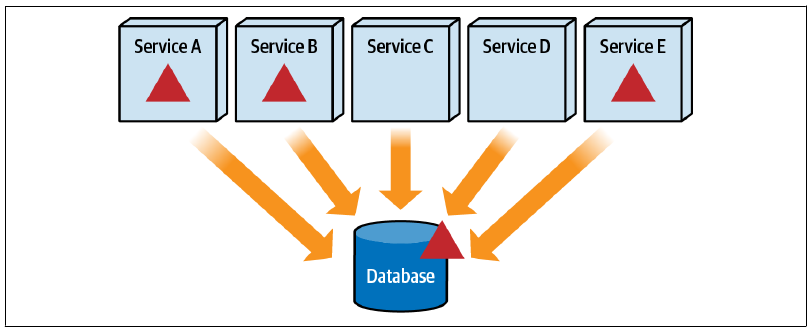
为共享数据库变更协调多项分布式服务，只是问题的一半。在任何分布式架构中，修改共享数据库真正的危险，是遗漏访问刚刚修改之表的服务。如图 图 6.3 所示，这些被遗忘的服务会在生产环境中持续失效，直到它们得到修改、测试和重新部署。
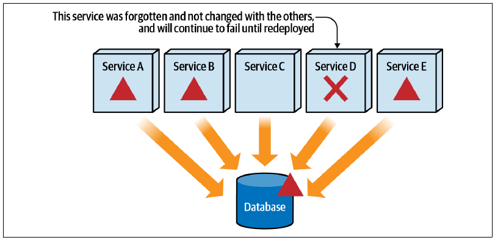
在大多数应用中，认真进行影响分析和全面回归测试，可以降低遗漏服务的风险。不过，设想一个包含 400 项服务的微服务生态系统，而所有服务共享同一个单体、高可用集群式关系数据库。你需要奔波于许多领域的开发团队之间，确认哪些服务使用正在修改的表；随后还必须把所有这些服务与数据库协调、测试，并作为单一整体一起部署。仅仅想象这个场景就足以令人麻木，甚至接近疯狂。
把数据库拆成定义良好的限界上下文，有助于显著控制破坏性数据库变更。限界上下文概念来自 Eric Evans 的经典著作《领域驱动设计》，它描述了源代码、业务逻辑、数据结构和数据全部绑定，也就是封装在特定上下文中的状态。
如图 图 6.4 所示，在服务及其相应数据周围形成良好的限界上下文有助于控制变更，因为变更只会影响该限界上下文中的服务。
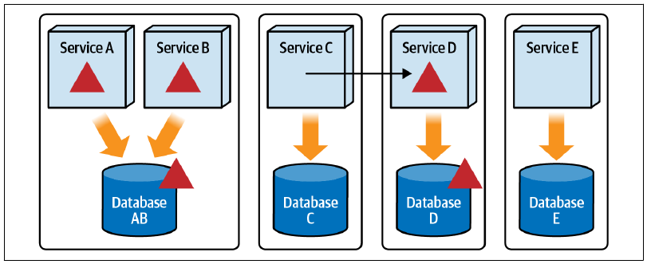
限界上下文通常围绕服务及其拥有的数据形成。这里的“拥有”是指服务会写入数据库，而不只是以只读方式访问数据。第 9 章将更详细地讨论分布式数据所有权。
图 图 6.4 中，服务 C 需要访问数据库 D 中的一部分数据，而数据库 D 与服务 D 位于同一个限界上下文。由于数据库 D 属于另一个限界上下文，服务 C 不能直接访问其数据。这样做不仅会违反限界上下文规则，也会让变更控制变得混乱。因此，服务 C 必须向服务 D 请求数据。第 10 章将详细介绍在维持限界上下文的同时访问其他服务所拥有数据的多种方法。
在服务 C 需要数据、而服务 D 在自身限界上下文中拥有数据的场景中，限界上下文还有一个重要方面：数据库抽象。图 图 6.5 中，服务 D 通过某种契约，例如 JSON、XML 甚至对象，把服务 C 请求的数据发送给它。
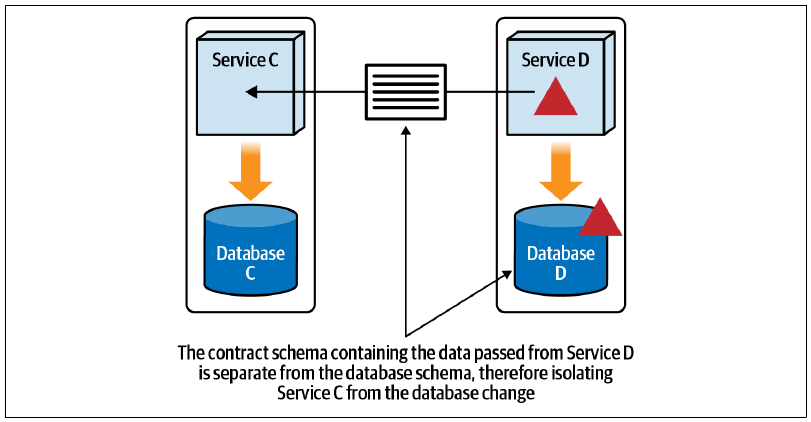
限界上下文的优势在于，发送给服务 C 的数据契约可以不同于数据库 D 的模式。这意味着，数据库 D 某张表的破坏性变更只会影响服务 D，不一定影响发送给服务 C 的数据契约。换句话说，服务 C 与数据库 D 的实际模式结构相互隔离。
为了说明这种抽象在分布式架构中的作用，假设数据库 D 包含结构如下的 Wishlist 表：
CREATE TABLE Wishlist
(
CUSTOMER_ID VARCHAR(10),
ITEM_ID VARCHAR(20),
QUANTITY INT,
EXPIRATION_DT DATE
);服务 D 在服务 C 请求愿望清单项目时向其发送的相应 JSON 契约如下：
{
"$schema": "http://json-schema.org/draft-04/schema#",
"properties": {
"cust_id": {"type": "string"},
"item_id": {"type": "string"},
"qty": {"type": "number"},
"exp_dt": {"type": "number"}
}
}JSON 模式中的到期时间字段 exp_dt 与数据库列名称不同，而且被指定为数字，也就是表示纪元时间的长整数，即从 1970 年 1 月 1 日午夜开始计算的毫秒数；数据库中对应字段则是 DATE 类型。由于存在独立的 JSON 契约，数据库中的列名或列类型发生变化时，不再影响服务 C。
例如，假设业务决定不再让愿望清单项目过期。这要求修改数据库表结构：
ALTER TABLE Wishlist
DROP COLUMN EXPIRATION_DT;服务 D 与数据库位于同一个限界上下文，因此必须修改以适应这项变更，但相应契约不必同时变化。在契约最终得到修改之前，服务 D 可以返回很久以后的某个日期，也可以把值设为零，表示项目不会过期。关键在于，限界上下文让服务 C 与数据库 D 的破坏性变更相互隔离。
6.1.1.2 连接管理
建立数据库连接是一项昂贵操作。数据库连接池不仅用于提高性能，也用于限制应用能够同时使用的连接数量。在单体应用中，连接池通常由应用或应用服务器拥有；在分布式架构中，每项服务，更准确地说是每个服务实例，通常都有自己的连接池。
如图 图 6.6 所示，当多项服务共享同一个数据库时，连接数量很快就会达到饱和，尤其是在服务或服务实例不断增加的情况下。
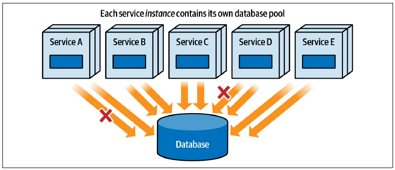
达到或超过数据库可用连接上限，是决定是否拆分数据库时需要考虑的另一项驱动因素。频繁出现连接等待，也就是等待可用连接所花的时间，通常是连接数已经达到上限的第一个信号。连接等待也可能表现为请求超时或断路器触发，因此使用共享数据库时如果经常出现这些情况，我们通常建议首先检查连接等待。
考虑一个例子：某个单体应用使用 200 个数据库连接，后来被拆成包含 50 项服务的分布式架构，每项服务的连接池包含 10 个连接。
原单体应用连接数：200
分布式服务数量：50
每项服务的连接数：10
最少服务实例数：2
服务连接总数：1,000
请注意，同一个应用上下文中的数据库连接从 200 个增加到 1,000 个，而服务甚至还没有开始扩展。假设一半服务扩展到平均每项 5 个实例，数据库连接数会迅速增加到 1,700。
如果没有连接策略或治理计划，服务就会尽可能使用更多连接，经常导致其他服务得不到急需的连接。因此，必须治理分布式架构中的数据库连接用法。一种有效方法是为每项服务分配连接配额，控制服务之间可用数据库连接的分配。连接配额规定某项服务允许使用或在连接池中提供的最大数据库连接数。
设置连接配额后，服务不能创建超过分配数量的数据库连接。如果服务达到配额上限，就必须等待正在使用的某个连接恢复可用。连接配额可以采用两种方式：为每项服务平均分配相同配额，或者根据各项服务的需要分配不同配额。
首次部署服务时，人们通常采用平均分配，因为尚不清楚每项服务在正常和峰值运行期间需要多少连接。这种方法虽然简单，却不够高效：某些服务可能需要更多连接，而其他服务持有的部分连接可能一直闲置。
可变分配方式更复杂，但在管理共享数据库连接时高效得多。它根据每项服务的功能与扩展要求分配不同配额。优点是可以优化分布式服务对可用连接的使用，确保需要更多连接的服务能够获得连接；缺点是必须了解每项服务的功能性质和扩展要求。
我们通常建议从平均分配开始，并创建适应度函数，测量每项服务的并发连接使用量。还建议把连接配额保存在外部配置服务器或服务中，以便手工调整，或者使用简单的机器学习算法自动调整。这项技术既能缓解连接饱和风险，也能在分布式服务之间合理平衡可用连接，避免浪费空闲连接。
表 表格 6.1 展示了一个示例：数据库最多支持 100 个并发连接，最初使用平均分配。服务 A 实际最多只需要 5 个连接，服务 C 需要 15 个，服务 E 需要 14 个；而服务 B 和 D 都已达到配额上限，并出现连接等待。
| 服务 | 配额 | 最大使用数 | 是否等待 |
|---|---|---|---|
| A | 20 | 5 | 否 |
| → B | 20 | 20 | 是 |
| C | 20 | 15 | 否 |
| → D | 20 | 20 | 是 |
| E | 20 | 14 | 否 |
服务 A 远低于配额，因此可以先从它那里重新分配连接。把五个数据库连接转给服务 B，再把五个转给服务 D，得到表 表格 6.2 的结果。
| 服务 | 配额 | 最大使用数 | 是否等待 |
|---|---|---|---|
| A | 10 | 5 | 否 |
| → B | 25 | 25 | 是 |
| C | 20 | 15 | 否 |
| D | 25 | 25 | 否 |
| E | 20 | 14 | 否 |
结果有所改善，但服务 B 仍在等待连接，说明它需要的连接数超过当前配额。再分别从服务 A 和服务 E 取出两个连接重新调整配额，便得到表 表格 6.3 所示的更好结果。
| 服务 | 配额 | 最大使用数 | 是否等待 |
|---|---|---|---|
| A | 8 | 5 | 否 |
| B | 29 | 27 | 否 |
| C | 20 | 15 | 否 |
| D | 25 | 25 | 否 |
| E | 18 | 14 | 否 |
持续适应度函数可以从每项服务收集流式指标数据，并据此完成这类分析。它还能判断最大已用连接数距离最大可用连接数还有多近，以及每项服务的配额与最大使用量之间还保留多少缓冲。
6.1.1.3 可扩展性
分布式架构的众多优势之一是可扩展性，也就是服务在保持稳定响应时间的同时处理请求量增长的能力。大多数云端和本地基础设施产品都能很好地确保服务、容器、HTTP 服务器和虚拟机随需求增长而扩展。但数据库怎么办？
如图 图 6.7 所示，服务扩展会给数据库带来巨大压力，不仅影响前一节讨论的数据库连接，也会影响吞吐量和数据库容量。要让分布式系统扩展，系统的所有部分都必须扩展，包括数据库。
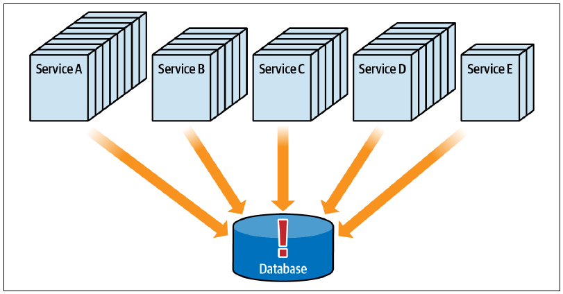
因此，可扩展性也是考虑拆分数据库时的一项数据解聚驱动因素。数据库连接、容量、吞吐量和性能，都会决定共享数据库能否满足分布式架构中多项服务的需求。
回顾表 表格 6.3 中经过优化的可变数据库连接配额。当服务通过增加多个实例进行扩展时，情况会发生巨大变化。表 表格 6.4 假设数据库连接总数为 100。
| 服务 | 配额 | 最大使用数 | 实例数 | 使用总数 |
|---|---|---|---|---|
| A | 8 | 5 | 2 | 10 |
| B | 29 | 27 | 3 | 81 |
| C | 20 | 15 | 3 | 45 |
| D | 25 | 25 | 2 | 50 |
| E | 18 | 14 | 4 | 56 |
| 合计 | 100 | 86 | 14 | 242 |
尽管配额最初按数据库的 100 个可用连接进行分配，但服务开始扩展后，配额就不再有效：实际使用量上升到 242，比数据库可用数量多 142 个。这很可能导致连接等待，继而引起整体性能下降和请求超时。
如图 图 6.8 所示，把数据拆成独立数据领域，甚至为每项服务配置独立数据库，可以减少每个数据库所需的连接，从而在服务扩展时提供更好的数据库可扩展性与性能。
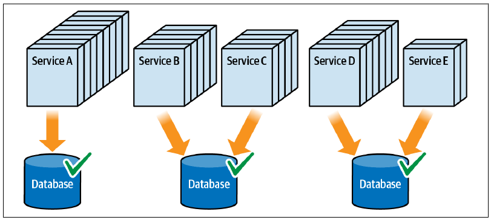
除数据库连接外，可扩展性还要考虑数据库承受的负载。拆分数据库可以降低每个数据库的负载，从而改善整体性能与可扩展性。
6.1.1.4 容错能力
多项服务共享同一个数据库时，数据库会成为单点故障，使整个系统的容错能力降低。这里把容错能力定义为：某项服务或数据库发生故障时，系统其他部分仍能不受干扰地继续运行的能力。图 图 6.9 中，由于全部服务共享单一数据库，一旦数据库停机，所有服务都会停止运行，因此整体容错能力很低。
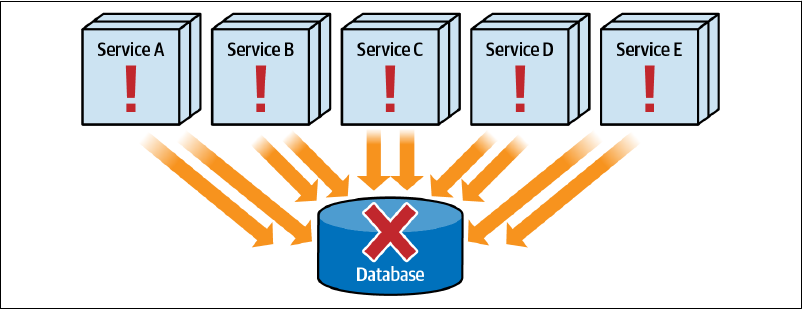
容错能力也是考虑拆分数据的驱动因素。如果系统某些部分需要容错能力，拆分数据就可以消除单点故障，如图 图 6.10 所示，确保数据库崩溃时系统仍有部分功能可以运行。
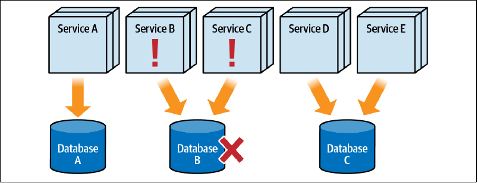
数据拆分后，即使数据库 B 停机，也只有服务 B 和服务 C 受到影响而无法运行，其他服务仍可不受干扰地继续工作。
6.1.1.5 架构量子
回顾第 2 章，架构量子被定义为具有高功能内聚、高静态耦合和同步动态耦合的独立部署制品。架构量子可以指导何时拆分数据库，因此也是一项数据解聚驱动因素。
考虑图 图 6.11 中的服务。服务 A 和服务 B 需要与其他服务不同的架构特征。虽然它们被分在一组，但由于存在单一共享数据库，它们并没有与其他服务形成独立量子。五项服务与数据库共同形成一个架构量子。
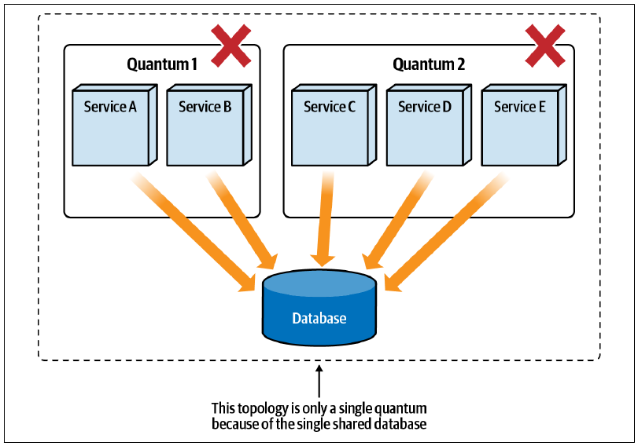
数据库属于架构量子定义中的功能内聚部分，因此必须拆分数据，才能让拆分后的每个部分分别位于自己的量子中。图 图 6.12 中，数据库拆分之后，服务 A、服务 B 及相应数据形成一个独立量子，与服务 C、D、E 形成的量子分开。
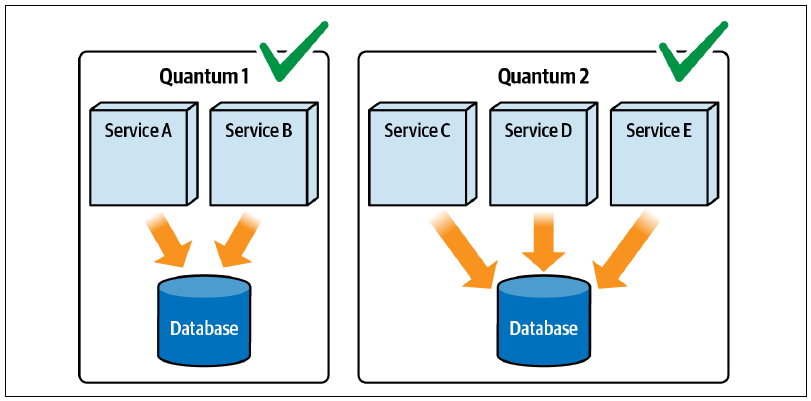
6.1.1.6 数据库类型优化
不同数据往往需要不同的处理方式。使用单体数据库时，全部数据都必须服从同一种数据库类型，这可能导致某些数据只能采用次优方案。
拆分单体数据后，架构师可以把特定数据迁移到更适合的数据库类型。例如，假设某个单体关系数据库保存应用事务数据，其中还包括国家代码、产品代码、仓库代码等键值对形式的参考数据。这类数据并不具有关系性质，而是键值性质，因此在关系数据库中很难管理。与关系数据库相比，键值数据库可以提供更合适的解决方案，本章稍后的“键值数据库”将继续介绍。
6.1.2 数据聚合因素
数据聚合因素与前一节的数据解聚因素作用完全相反。它们回答并论证“什么时候应该考虑把数据重新放在一起？”这一问题。把解聚因素与聚合因素结合起来，才能权衡何时拆分数据、何时不应拆分。
把数据重新聚合在一起的两项主要驱动因素如下：
- 数据关系
-
表之间是否存在外键、触发器或视图，形成紧密关系？
- 数据库事务
-
是否必须使用单一事务工作单元来保证数据完整性与一致性？
下面分别详细讨论这两项驱动因素。
6.1.2.1 数据关系
与架构中的组件一样，数据库表也会发生耦合，关系型数据库尤其如此。外键、触发器、视图和存储过程等制品把表连接在一起，使数据难以拆分，如图 图 6.13 所示。
想象一下，你走到 DBA 或数据架构师面前，告诉他们：为了在微服务生态中建立紧密的限界上下文，必须拆分数据库，因此数据库中的每个外键和视图都必须删除。这种场景既不太可能被接受，也不一定可行，但要在微服务中支持“每项服务一个数据库”模式，确实必须面对这个问题。
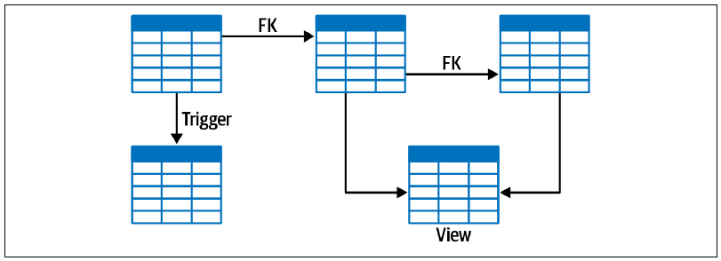
大多数关系数据库都需要这些制品来支持数据一致性和完整性。除物理制品外，数据也可能存在逻辑关系，例如故障工单表与相应的工单状态表。不过，如图 图 6.14 所示，把数据迁移到另一个模式或数据库以形成限界上下文时，跨边界的这些制品必须移除。
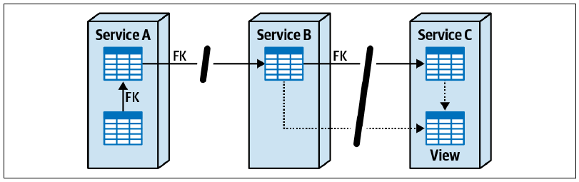
服务 A 中表之间的外键关系可以保留，因为这些数据位于同一个限界上下文、模式或数据库。服务 B 与服务 C 的表之间的外键，以及服务 C 使用的视图，则必须移除，因为相应表位于不同数据库或模式中。
数据之间无论是逻辑还是物理关系，都属于数据聚合驱动因素，从而与数据解聚因素形成权衡。例如，变更控制这一解聚因素，是否比保留表间外键关系这一聚合因素更重要？容错能力是否比保留表间物化视图更重要？明确什么更重要，才能判断数据是否应该拆分，以及最终模式应具有怎样的粒度。
6.1.2.2 数据库事务
数据库事务是另一项数据聚合因素，第 12 章“分布式事务”将详细讨论。如图 图 6.15 所示，当一项服务对同一数据库或模式中的不同表执行多次写入时，可以把这些更新放入具有原子性、一致性、隔离性和持久性的 ACID 事务，作为单一工作单元统一提交或回滚。

但是，如图 图 6.16 所示，数据被拆到独立模式或数据库之后，服务间需要远程调用，单一事务工作单元便不复存在。这意味着某张表的插入或更新可能已经提交，其他表却因错误而未提交，从而产生数据一致性与完整性问题。
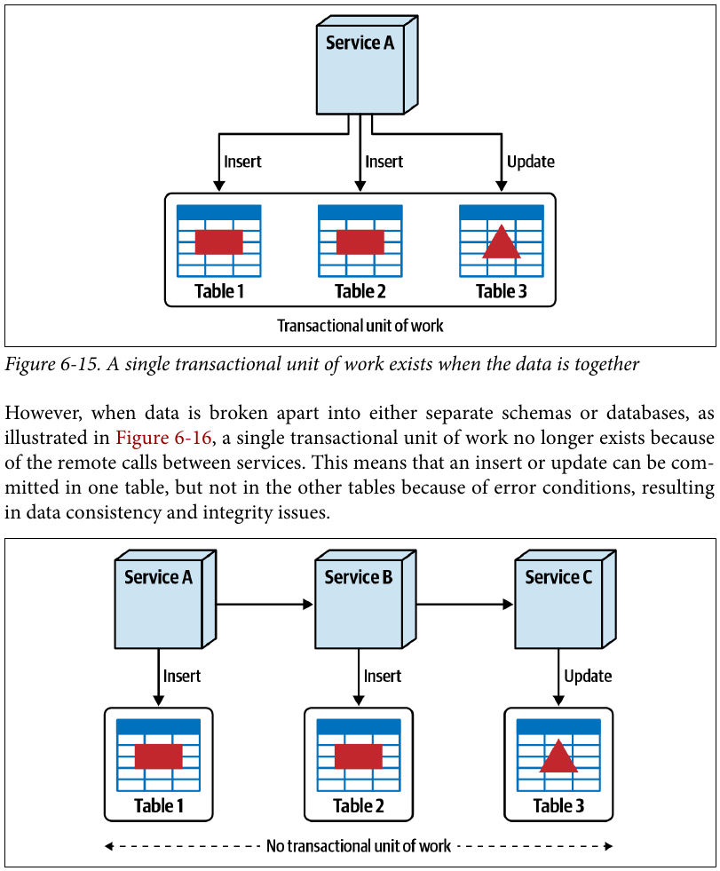
第 12 章将深入讨论分布式事务管理与事务型 Saga。这里要强调的是，数据库事务也是一项数据聚合驱动因素，在考虑拆分数据库时必须将其纳入权衡。
6.1.3 Sysops Squad 案例：论证数据库分解
11 月 15 日，星期一，15:55
准备好各项理由后，Addison 和 Devon 与 Dana 会面，试图说服她必须拆分 Sysops Squad 的单体数据库。
“Dana，你好，”Addison 说，“我们认为已经有足够证据说服你，Sysops Squad 数据库确实必须拆分。”
“我洗耳恭听。”Dana 双臂交叉，准备据理力争，让数据库保持现状。
“我先来，”Addison 说，“你看这些日志。每次运行操作报表时，应用的工单功能都会卡住。”
“是的，”Dana 说，“我承认连我也怀疑过这个问题。很明显，是工单功能访问数据库的方式有问题，不是报表。”
“实际上，”Addison 说，“工单和报表都有关系。看看这里。”
Addison 向 Dana 展示了指标和日志。某些查询必须在线程中执行；报表查询运行时，工单功能的查询会因为等待状态而超时。她还展示了系统的报表部分如何使用并行线程，同时查询复杂报表的多个部分，实际上占用了全部数据库连接。
“好吧，我能理解从数据库连接角度看，单独设置报表数据库会改善情况。但这仍不足以说服我拆分非报表数据。”Dana 说。
“说到数据库连接，”Devon 说，“看看我们开始拆分领域服务后，对连接池的估算。”
Devon 向 Dana 展示了最终规划的 Sysops Squad 分布式应用预计包含多少项服务，以及应用扩展时每项服务预计有多少实例。Dana 向 Devon 解释，连接池位于每个独立服务实例内部，不像迁移当前阶段那样由应用服务器统一拥有。
“所以你看，Dana，”Devon 说，“按照这些预测，为了提供处理工单负载所需的可扩展性，我们还需要增加 2,000 个数据库连接，而单一数据库根本提供不了这么多。”
Dana 花了一会儿查看这些数字。“Addison，你认同这些数字吗？”
“认同，”Addison 说，“Devon 和我根据 HTTP 流量以及 Parker 提供的预测增长率，经过大量分析共同得出了这些数字。”
“我必须承认，”Dana 说，“你们准备得很好。我尤其满意的是，你们已经考虑到不能让服务连接多个数据库或模式。你们知道，在我这里这是绝对禁止的。”
“我们也同意。不过还有一个理由要讨论，”Addison 说，“你可能知道，也可能不知道，系统无法供客户使用的问题最近频繁发生。拆分服务虽然提供了一定容错能力，但如果单体数据库因为维护或服务器崩溃而停机，所有服务都会停止运行。”
“Addison 的意思是，”Devon 补充道，“拆分数据库后，我们可以为数据创建领域孤岛，从而提高容错能力。换句话说，即使调查数据库停机，工单功能仍然可用。”
“我们称它为架构量子，”Addison 说，“数据库属于系统静态耦合的一部分，因此拆分数据库可以让核心工单功能独立运行，不再同步依赖系统其他部分。”
“听着，”Dana 说，“你们已经说服我，拆分 Sysops Squad 数据库确实有充分理由。但你们打算怎么做到？知道这个数据库中有多少外键和视图吗？你们不可能把这些东西全部删除。”
“我们不一定需要移除全部制品。这正是数据领域和五步流程发挥作用的地方，”Devon 说，“来，我解释给你听……”
6.2 分解单体数据
分解单体数据库十分困难，架构师必须与数据库团队密切协作，才能安全有效地拆分数据。一种特别有效的技术，是采用所谓的五步流程。如图 图 6.17 所示，这种演进式、迭代式流程以数据领域为载体，有条理地把数据迁移到独立模式，进而迁移到不同的物理数据库。
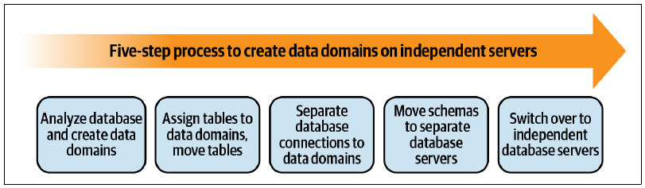
数据领域是一组相互耦合的数据库制品，包括表、视图、外键和触发器；它们都与特定领域有关，并经常在有限的功能范围内共同使用。
为了说明数据领域的概念，可以回顾表 1.2 中介绍的 Sysops Squad 数据表，以及表 表格 6.5 所示的建议数据领域分配。
| 数据表 | 建议数据领域 |
|---|---|
customer |
客户 |
customer_notification |
客户 |
survey |
调查 |
question |
调查 |
survey_administered |
调查 |
survey_question |
调查 |
survey_response |
调查 |
billing |
支付 |
contract |
支付 |
payment_method |
支付 |
payment |
支付 |
sysops_user |
资料 |
profile |
资料 |
expert_profile |
资料 |
expertise |
资料 |
location |
资料 |
article |
知识库 |
tag |
知识库 |
keyword |
知识库 |
article_tag |
知识库 |
article_keyword |
知识库 |
ticket |
工单 |
ticket_type |
工单 |
ticket_history |
工单 |
表 表格 6.5 列出了 Sysops Squad 应用中的六个数据领域：客户、调查、支付、资料、知识库和工单。billing 表属于支付领域，ticket 和 ticket_type 表属于工单领域，以此类推。
从概念上理解数据领域的一种方法，是把数据库想象成足球，每个白色六边形代表一个独立数据领域。如图 图 6.18 所示，每个白色六边形都包含一组与领域相关的表，以及外键、视图、存储过程等全部耦合制品。
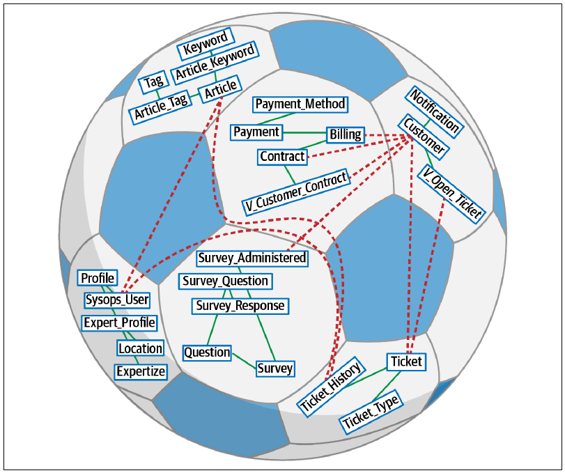
以这种方式可视化数据库，可以让架构师和数据库团队清楚看到数据领域边界，以及必须拆除的跨领域依赖，例如外键、视图和存储过程。图 图 6.18 中，每个白色六边形内部的全部数据表依赖和关系都可以保留，但白色六边形之间的关系不能保留。实线代表数据领域内部自包含的依赖，虚线则跨越数据领域；把数据领域提取到独立模式时，必须移除虚线依赖。
提取数据领域时，必须移除跨领域依赖，包括数据领域之间的外键约束、视图、触发器、函数和存储过程。数据库团队可以采用 Scott Ambler 与 Pramod Sadalage 所著《重构数据库：演进式数据库设计》中的重构模式，安全且迭代地消除这些数据依赖。
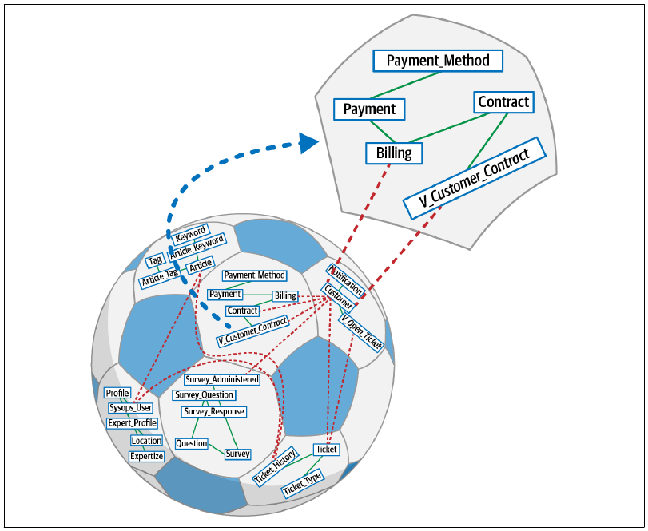
为了说明如何定义数据领域并移除跨领域引用，考虑图 图 6.19 中创建的“支付”数据领域。customer 表与 v_customer_contract 视图属于不同数据领域，因此必须从“支付”领域的视图中移除 customer 表。定义数据领域之前，原始视图如下。
示例 6-1：使用跨领域连接获取客户未结合同的数据库视图
CREATE VIEW [payment].[v_customer_contract]
AS
SELECT
customer.customer_id, customer.customer_name,
contract.contract_start_date, contract.contract_duration,
billing.billing_date, billing.billing_amount
FROM payment.contract AS contract
INNER JOIN customer.customer AS customer
ON (contract.customer_id = customer.customer_id)
INNER JOIN payment.billing AS billing
ON (contract.contract_id = billing.contract_id)
WHERE contract.auto_renewal = 0在示例 6-2 更新后的视图中，客户表与支付表之间的连接已经删除，客户名称字段 customer.customer_name 也一并移除。
示例 6-2：在支付领域中获取指定客户未结合同的数据库视图
CREATE VIEW [payment].[v_customer_contract]
AS
SELECT
billing.customer_id, contract.contract_start_date,
contract.contract_duration, billing.billing_date,
billing.billing_amount
FROM payment.contract AS contract
INNER JOIN payment.billing AS billing
ON (contract.contract_id = billing.contract_id)
WHERE contract.auto_renewal = 0数据领域的限界上下文规则与单个数据表完全相同：一项服务不能访问多个数据领域。因此，从视图中移除客户表之后，“支付”服务必须调用“客户”服务，取得原来直接从视图获得的客户名称。
架构师和数据库团队理解数据领域概念之后，就可以应用分解单体数据库的五步流程。下面依次介绍这五个步骤。
6.2.1 第 1 步：分析数据库并创建数据领域
如图 图 6.20 所示，所有服务都可以访问数据库中的全部数据。这种做法称为共享数据库集成风格，由 Gregor Hohpe 和 Bobby Woolf 在《企业集成模式：设计、构建及部署消息传递解决方案》中描述。它会让数据与访问数据的服务形成紧密耦合。正如前面的“数据分解驱动因素”所述，数据库中的这种紧密耦合会使变更管理非常困难。
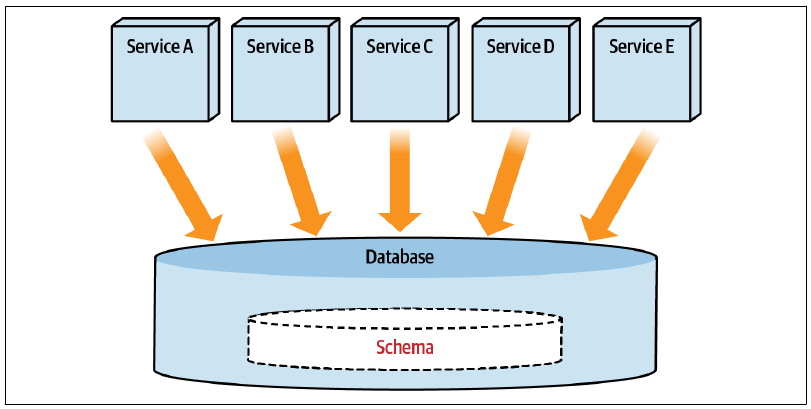
拆分数据库的第一步，是识别数据库中的特定领域分组。例如，表 表格 6.5 把相关表归在一起，帮助识别可能的数据领域。
6.2.2 第 2 步：把表分配到数据领域
下一步是沿特定限界上下文对表进行分组，把属于某个数据领域的表分配到自己的模式中。模式是数据库服务器中的逻辑构造，包含表、视图和函数等对象。在 Oracle 等某些数据库服务器中，模式与用户相同；在 SQL Server 等其他数据库中，模式是存放数据库对象、并供用户获得访问权限的逻辑空间。
如图 图 6.21 所示，我们为每个数据领域创建模式，并把表移动到它们所属的模式。
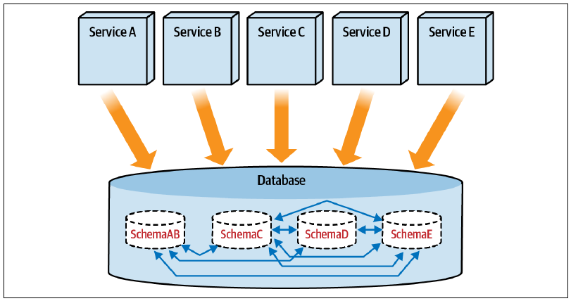
如果属于不同数据领域的表彼此紧密耦合并高度相关，就必须合并数据领域，形成更宽的限界上下文，让多项服务共同拥有某个数据领域。第 9 章将更详细地讨论合并数据领域。
数据领域是架构概念，模式则是保存某个数据领域数据库对象的数据库构造。数据领域与模式通常是一对一关系，但一个数据领域也可以映射到一个或多个模式，特别是在数据关系紧密耦合而必须合并数据领域时。本书后续会把“数据领域”和“模式”视为相同概念，并交替使用这两个术语。
为了说明如何把表分配到模式，考虑 Sysops Squad 示例。billing 表必须从原始模式移动到名为 payment 的另一个数据领域模式：
ALTER SCHEMA payment TRANSFER sysops.billing;另一种方式，是让数据库团队为不属于当前模式的表创建同义词。同义词是类似符号链接的数据库构造，为同一模式、不同模式或不同服务器中的另一个数据库对象提供别名。虽然同义词的目的在于消除跨模式查询，但仍然需要相应的读写权限。
考虑以下跨领域查询：
SELECT
history.ticket_id, history.notes, agent.name
FROM ticket.ticket_history AS history
INNER JOIN profile.sysops_user AS agent
ON (history.assigned_to_sysops_user_id = agent.sysops_user_id)接下来，在工单模式中为 profile.sysops_user 表创建同义词：
CREATE SYNONYM ticketing.sysops_user
FOR profile.sysops_user;
GO于是，查询可以使用同义词 sysops_user，而不是直接访问跨领域表：
SELECT
history.ticket_id, history.notes, agent.name
FROM ticket.ticket_history AS history
INNER JOIN ticket.sysops_user AS agent
ON (history.assigned_to_sysops_user_id = agent.sysops_user_id)遗憾的是，为跨模式访问的表创建同义词，会给应用开发人员留下耦合点。为了形成正确的数据领域，后续必须拆除这些耦合点，把集成点从数据库层移动到应用层。同义词并没有真正消除跨模式查询，但它们能简化依赖检查和代码分析，使后续拆分更容易。
6.2.3 第 3 步：把数据库连接分离到数据领域
这一步需要重构每项服务中的数据库连接逻辑，确保服务连接到特定模式，而且只能读写属于自身数据领域的表。图 图 6.22 展示的这一过渡最为困难，因为所有跨模式访问都必须在服务层解决。
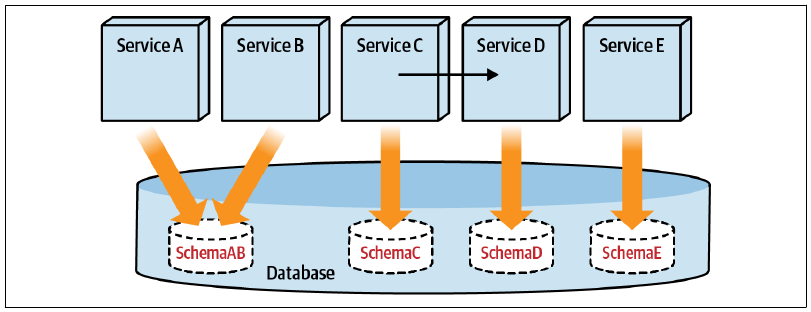
数据库配置已经改变，所有数据访问都必须严格通过服务及其连接的模式完成。在图中，服务 C 与服务 D 通信，而不是直接访问模式 D。系统不再存在跨模式访问，第 2 步创建的全部同义词也已移除。
需要其他领域的数据时，不要直接进入其数据库。应当通过拥有该数据领域的服务访问数据。
完成这一步后，数据库达到每项服务拥有数据主权的状态，也就是每项服务都拥有自己的数据。这是分布式架构的理想状态。与所有架构实践一样，它也有好处和缺点。
好处
- 团队可以修改数据库模式，无须担心变更影响其他领域。
- 每项服务都可以采用最适合自身使用场景的数据库技术和数据库类型。
缺点
- 服务需要访问大量数据时，可能出现性能问题。
- 数据库无法维护跨领域引用完整性，可能导致数据质量问题。
- 所有访问其他领域表的数据库代码，例如存储过程和函数，都必须迁移到服务层。
6.2.4 第 4 步：把模式迁移到独立数据库服务器
数据库团队创建并分离数据领域、隔离服务使其只访问自身数据之后，就可以把数据领域迁移到独立物理数据库。即使服务只访问自己的模式，共享单一数据库仍会形成单一架构量子，可能对可扩展性、容错能力和性能等运行特征产生不利影响，因此这一步通常不可避免。
把模式迁移到独立物理数据库时，数据库团队有两个选择：备份与恢复，或者复制。
- 备份与恢复
-
团队先备份每个包含数据领域的模式，再为每个数据领域建立数据库服务器。随后恢复模式，让服务连接新数据库服务器中的模式，最后从原数据库服务器删除模式。这种方法通常需要迁移停机时间。
- 复制
-
团队先为每个数据领域建立数据库服务器，再复制模式，把连接切换到新服务器，最后从原服务器删除模式。这种方法可以避免停机，但建立复制和协调迁移需要更多工作。
图 图 6.23 展示了复制方案。数据库团队建立多个数据库服务器，让每个数据领域拥有一台数据库服务器。
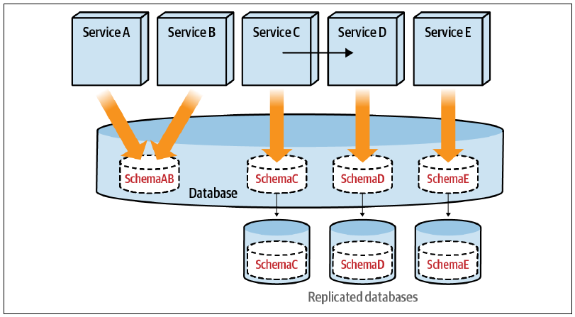
6.2.5 第 5 步：切换到独立数据库服务器
模式完成复制后，就可以切换服务连接。让数据领域与服务成为独立部署单元的最后一步，是删除对旧数据库服务器的连接，并从旧服务器中删除相应模式。最终状态如图 图 6.24 所示。
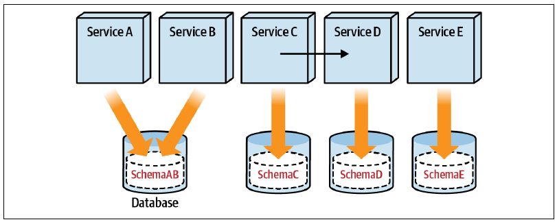
数据库团队分离数据领域、隔离数据库连接，并最终把数据领域迁移到各自服务器后，就可以分别优化各数据库服务器的可用性和可扩展性。团队还可以分析数据，选择最合适的数据库类型，在生态系统中引入多语言数据库使用方式。
6.3 选择数据库类型
大约从 2005 年开始，数据库技术经历了一场革命。遗憾的是，这段时间涌现的大量产品也产生了一个称为“选择悖论”的问题。产品和选项越多，需要作出的权衡决策就越多。每种产品都针对特定权衡进行优化，因此软件架构师和数据架构师必须结合自身问题空间，理解这些权衡并选择合适产品。
本节将使用星级评价不同数据库类型，并依据以下特征进行分析。
- 学习曲线的平缓程度
-
指新开发人员、数据架构师、数据建模人员、运维 DBA 及其他数据库用户学习和采用该数据库的难易程度。例如，通常可以假设大多数软件开发人员理解 SQL，而 Gremlin 这样的图查询语言可能是一项小众技能。星级越高，学习越容易；星级越低，学习越困难。
- 数据建模的容易程度
-
指数据建模人员使用数据模型表示领域的难易程度。星级越高，说明数据建模适合的使用场景越多，而且完成建模后也更容易修改和采用。
- 可扩展性与吞吐量
-
指数据库为处理更高吞吐量而扩展的程度与难易程度。数据库是否容易扩展？能否水平扩展、垂直扩展，或同时采用两种方式？星级越高，说明数据库越容易扩展并获得更高吞吐量。
- 可用性与分区容忍性
-
指数据库是否支持高可用配置，例如 MongoDB 副本集或 Apache Cassandra 的可调一致性，以及是否提供处理网络分区的功能。星级越高，数据库对高可用和/或分区容忍的支持越好。
- 一致性
-
指数据库是否支持“始终一致”的范式。数据库支持 ACID 事务，还是更偏向采用最终一致性模型的 BASE 事务？是否能为不同类型的写入提供可调一致性模型？星级越高，数据库对一致性的支持越强。
- 编程语言支持、产品成熟度、SQL 支持与社区
-
指数据库支持哪些以及多少种编程语言、产品成熟程度和社区规模。组织能否轻松招聘到掌握该数据库的人才？星级越高，说明支持越好、产品越成熟，也越容易招聘人才。
- 读写优先级
-
指数据库偏重读、偏重写，还是在两者之间保持平衡。这不是非此即彼的二元选择，而是一条表示数据库优化方向的连续尺度。
6.3.1 关系型数据库
关系型数据库也称 RDBMS，三十多年来一直是首选数据库。它们的使用价值与稳定性十分显著，在多数业务应用中尤其如此。关系型数据库以无处不在的结构化查询语言 SQL 和提供的 ACID 属性著称。SQL 接口可以在同一写模型之上实现不同读模型，因此关系型数据库常常成为首选。图 图 6.25 展示了关系型数据库的星级评价。
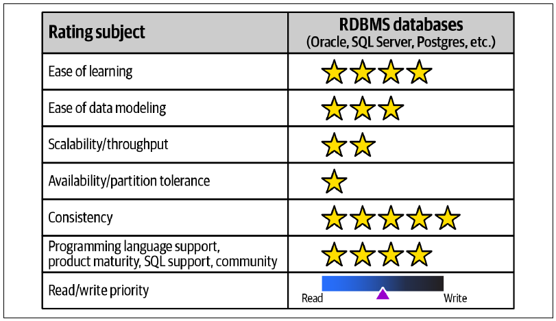
- 学习曲线的平缓程度
-
关系型数据库已经存在多年，学校普遍教授相关知识，也拥有成熟文档和教程，因此比其他数据库类型更容易学习。
- 数据建模的容易程度
-
关系型数据库支持灵活的数据建模，可以表示键值、文档和类似图的数据结构，也可以通过增加新索引改变读取模式。任意深度的图结构等某些模型很难实现。关系型数据库把数据组织成表和行，类似电子表格，对大多数数据建模人员来说很自然。
- 可扩展性与吞吐量
-
关系型数据库通常通过大型计算机进行垂直扩展。配置复制和自动切换比较复杂，需要更多协调与设置工作。
- 可用性与分区容忍性
-
关系型数据库通常更偏重一致性，而不是可用性和分区容忍性。第 9 章“表拆分技术”将继续讨论。
- 一致性
-
关系型数据库多年来占据主导地位，主要原因之一是对 ACID 属性的支持。这些特性处理了并发系统中的许多问题，让开发人员无须操心并发的底层细节以及数据库如何处理这些细节。
- 编程语言支持、产品成熟度、SQL 支持与社区
-
关系型数据库历史悠久，可以应用成熟的设计、实现和运维模式，因此容易采用、开发并集成到架构中。许多关系数据库缺少对响应式流 API 等新概念的支持，新架构概念进入成熟关系数据库通常需要更长时间。关系型数据库拥有大量编程语言接口，用户社区也很庞大，尽管分散在不同厂商周围。
- 读写优先级
-
可以通过设计关系数据模型，让读取或写入更高效。同一个数据库能够处理不同类型的负载，在读写之间取得平衡。并非所有场景都需要 ACID 属性，尤其是数据量和流量巨大，或者需要非常灵活的模式，例如调查管理时。这些场景下，其他数据库类型可能更合适。
MySQL、Oracle、Microsoft SQL Server 和 PostgreSQL 是最流行的关系型数据库，可以独立安装，也可以在主要云平台上作为数据库即服务使用。
6.3.2 聚合导向
聚合导向是指倾向于把相关且具有复杂结构的数据作为整体处理。“聚合”一词来自 Eric Evans 的《领域驱动设计：软件核心复杂性应对之道》。可以把 Sysops Squad 中的工单或客户以及各自依赖的全部表理解为聚合。与所有架构实践一样，聚合导向也包含好处和缺点。
好处
- 可以把整个聚合复制到不同服务器，因此易于在服务器集群中分发数据。
- 减少数据库连接操作，改善读写性能。
- 减少应用模型与存储模型之间的阻抗失配。
缺点
- 很难划分出正确聚合，改变聚合边界也很困难。
- 跨聚合分析数据很困难。
6.3.3 键值数据库
键值数据库类似哈希表数据结构，也可以理解为 RDBMS 中一张以 ID 列为键、以二进制大对象列为值的表，因此能够存储任何类型的数据。键值数据库属于 NoSQL 数据库家族。本书作者之一 Pramod Sadalage 与 Martin Fowler 合著的《NoSQL 精粹：多语言持久化世界的简明指南》介绍了 NoSQL 数据库的兴起，以及使用这类数据库的动机、方法和权衡，是进一步了解这种数据库类型的良好参考资料。
在 NoSQL 数据库中，键值数据库最容易理解。应用客户端可以插入一个键和值，取得已知键对应的值，或者删除已知键及其值。键值数据库既不知道也不关心值内部包含什么，因此只能通过键查询，不能通过其他内容查询。
与关系型数据库不同，选择键值数据库时应以实际需求为准。Amazon DynamoDB 和 Riak KV 属于持久化键值数据库，MemcacheDB 属于非持久化数据库，Redis 等数据库则可以配置为持久化或非持久化。它们不支持连接、WHERE、ORDER BY 等关系数据库构造，而是提供 get、put 和 delete 操作。图 图 6.26 展示了键值数据库的评价。
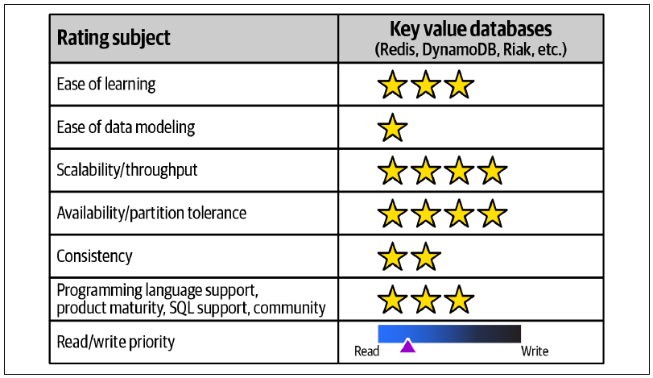
- 学习曲线的平缓程度
-
键值数据库容易理解。由于采用聚合导向，必须正确设计聚合，因为聚合发生任何变化都意味着要重写全部数据。从关系型数据库迁移到任何 NoSQL 数据库，都需要练习并忘掉某些熟悉做法。例如，开发人员不能简单发出“取得所有键”的查询。
- 数据建模的容易程度
-
键值数据库采用聚合导向，可以把数组、映射或其他任何内存结构，乃至大型二进制对象作为值。数据只能通过键或 ID 查询，因此客户端必须在数据库之外掌握键。
session_id、user_id和order_id都是很好的键。 - 可扩展性与吞吐量
-
键值数据库按键或 ID 建立索引，不需要连接或排序操作，因此键查找非常快。数据库直接获取值并返回客户端，从而更容易扩展并获得更高吞吐量。
- 可用性与分区容忍性
-
键值数据库类型繁多，各自属性不同；同一数据库也可以针对一次安装或每次读取配置不同方式。例如，Riak 支持
all、one、quorum和default等仲裁属性。使用one时，只要任意一个节点响应，查询就可以成功返回；使用all时，所有节点都必须响应。每次查询都可以调整分区容忍性与可用性，因此把所有键值存储视为完全相同是错误的。 - 一致性
-
每次写入时，可以采用与读取仲裁类似的配置，形成所谓的可调一致性。可以用延迟换取更高一致性。要让写入具有高度一致性，所有节点都必须响应，这会降低分区容忍性。多数派仲裁通常被视为良好权衡。
- 编程语言支持、产品成熟度、SQL 支持与社区
-
键值数据库拥有良好的编程语言支持，许多开源数据库还有活跃社区帮助用户学习与理解。大多数产品提供 HTTP REST API，因此很容易集成。
- 读写优先级
-
键值数据库采用聚合导向，通过键或 ID 访问数据，因此偏重读取。它们可以用作会话存储，也可以缓存用户属性和偏好。
关系型数据库中的分区概念广为人知：依据某种模式，把表数据划分为位于同一数据库服务器上的多个集合。分片与分区相似，但数据位于不同服务器或节点。各节点协作，根据分片键判断数据存在哪里或应当存到哪里。“分片”指数据库数据的水平分区。
6.3.4 文档数据库
JSON 或 XML 等文档是文档数据库的基础。文档是人类可读、自描述的层次树结构。文档数据库也是一种 NoSQL 数据库，图 图 6.27 展示了相应评价。这类数据库理解数据结构，可以为文档的多个属性建立索引，从而提供更灵活的查询能力。
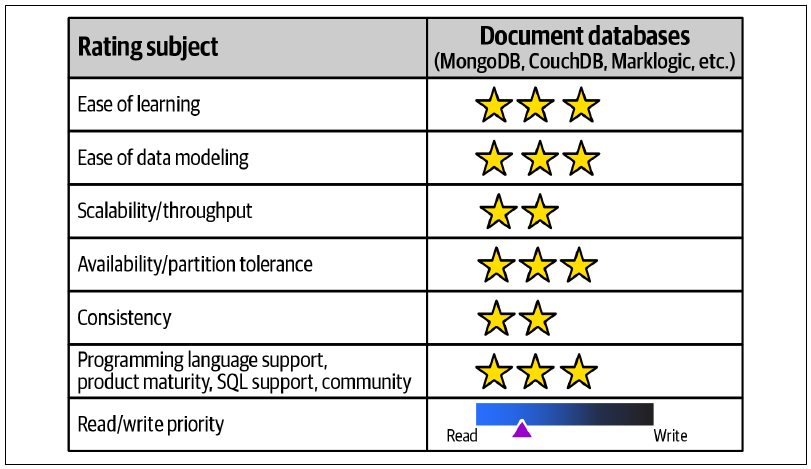
- 学习曲线的平缓程度
-
文档数据库类似值可供人类阅读的键值数据库，因此更容易学习。企业已经习惯在 API 负载、JavaScript 前端等不同上下文中处理 XML 和 JSON 文档。
- 数据建模的容易程度
-
与键值数据库一样，数据建模需要表示订单、工单等聚合及其他领域对象。文档数据库对聚合设计的容忍度更高，因为聚合内部的各个部分都可以查询和建立索引。
- 可扩展性与吞吐量
-
文档数据库采用聚合导向，容易扩展。复杂索引会降低可扩展性；随着数据量增加，还需要分区或分片。引入分片会增加复杂性，并迫使团队选择分片键。
- 可用性与分区容忍性
-
与键值数据库一样，文档数据库可以配置为提供更高可用性。如果分片集合采用复制集群，配置就会变得复杂。云提供商正在努力提高这类配置的易用性。
- 一致性
-
某些文档数据库已经开始支持集合内部的 ACID 事务，但在部分边界场景中可能无法正常工作。与键值数据库一样，文档数据库可以使用仲裁机制调整读写操作。
- 编程语言支持、产品成熟度、SQL 支持与社区
-
文档数据库是最流行的 NoSQL 数据库类型，拥有活跃用户社区、大量在线学习教程和多种编程语言驱动，因而比较容易采用。
- 读写优先级
-
文档数据库采用聚合导向，并提供二级索引用于查询，因此偏重读取。
NoSQL 数据库的一个常见特点，是数据与模式属性名称会发生重复。任意两条记录都不必具有相同模式或属性名称，这带来了独特的变更控制机制与灵活性。无模式特性很强大，但必须认识到：数据始终存在模式，只是这个模式可能是隐式的或定义在其他位置。应用必须能够处理数据库返回的多个模式版本。因此，说 NoSQL 数据库完全没有模式，是一种误导。
6.3.5 列族数据库
列族数据库也称宽列数据库或大表数据库，其中每一行可以拥有不同数量的列，每列都是一个名称与值的配对。名称称为列键，值称为列值，行的主键称为行键。列族数据库也是一种 NoSQL 数据库，会把同时访问的相关数据分到一组。图 图 6.28 展示了相应评价。
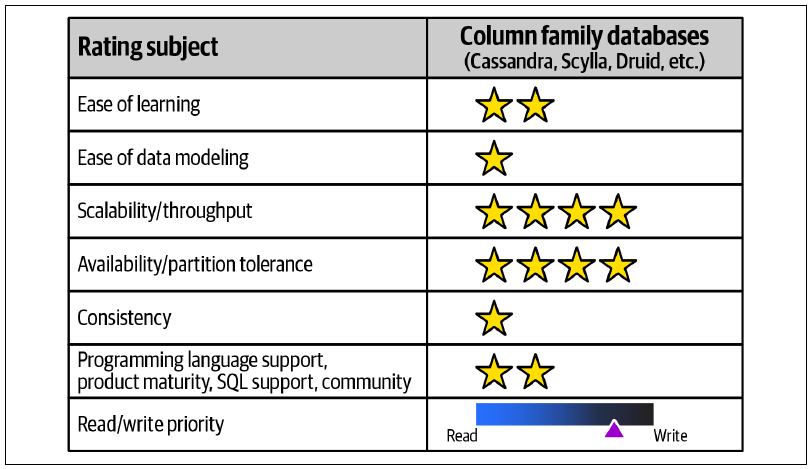
- 学习曲线的平缓程度
-
列族数据库较难理解。一行包含一组名称与值的配对，每行都可以具有不同配对。有些配对还能包含列映射，称为超级列。理解如何使用这些结构需要时间和练习。
- 数据建模的容易程度
-
使用列族数据库建模需要一定适应过程。数据必须组织成共享单一行标识符的名称与值配对组，而设计行键通常需要多轮迭代。Apache Cassandra 等列族数据库引入了类似 SQL 的 Cassandra 查询语言 CQL，使数据建模更容易上手。
- 可扩展性与吞吐量
-
所有列族数据库都具有很强的可扩展性，适合需要极高写入或读取吞吐量的场景。它们可以针对读写操作进行水平扩展。
- 可用性与分区容忍性
-
列族数据库天然以集群方式运行，集群部分节点停机时，对客户端仍然透明。默认复制因子通常为 3，也就是至少保存三份数据，从而改善可用性与分区容忍性。与键值和文档数据库类似，列族数据库也可以根据仲裁需要调整读写行为。
- 一致性
-
与其他 NoSQL 数据库一样，列族数据库遵循可调一致性概念，每次操作都可以根据需要选择一致性程度。例如，在高写入量而且能够容忍少量数据丢失的场景中，可以采用
ANY写一致性级别，表示至少有一个节点接受写入；ALL则要求所有节点都接受写入并返回成功。读取操作也可以采用类似级别。这是一项权衡：一致性级别越高，可用性和分区容忍性越低。 - 编程语言支持、产品成熟度、SQL 支持与社区
-
Cassandra 和 Scylla 等列族数据库拥有活跃社区，类似 SQL 的接口也使这类数据库更容易采用。
- 读写优先级
-
列族数据库使用 SSTable、提交日志和内存表等概念，只在数据存在时填充名称与值配对，因此比关系型数据库更善于处理稀疏数据，非常适合高写入量场景。
所有 NoSQL 数据库都围绕聚合导向设计。聚合可以改善读写性能，并让数据库以集群方式运行时获得更高可用性和分区容忍性。第 9 章“表拆分技术”将更详细地介绍 CAP 定理。
6.3.6 图数据库
关系型数据库通过引用隐式表达关系，图数据库则使用节点保存实体及其属性。这些节点通过边连接，边也称为关系，是显式对象。节点按照关系组织，可以沿特定边遍历，从而分析相互连接的数据。
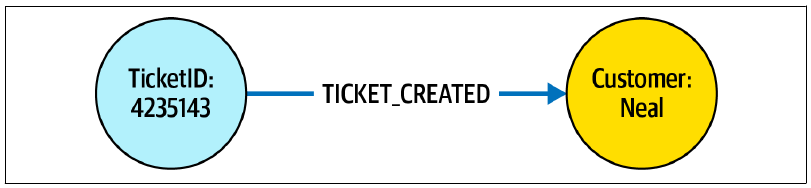
图数据库中的边具有方向意义。图 图 6.29 中，类型为 TICKET_CREATED 的边，把 ID 为 4235143 的工单节点连接到 ID 为 Neal 的客户节点。可以从工单节点沿传出边 TICKET_CREATED 遍历，也可以从客户节点沿传入边 TICKET_CREATED 遍历。一旦混淆方向，图查询就会变得非常困难。图 图 6.30 展示了图数据库的评价。
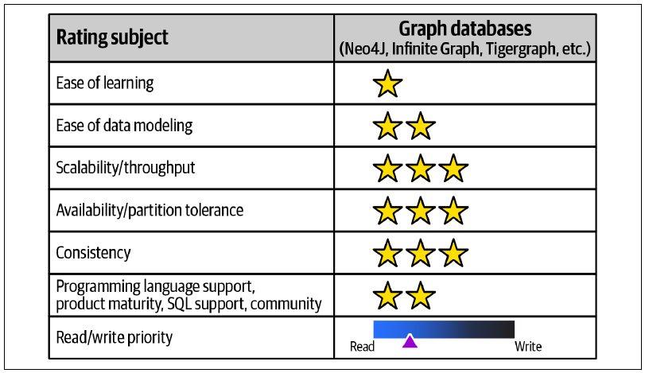
- 学习曲线的平缓程度
-
图数据库的学习曲线陡峭，理解如何使用节点、关系、关系类型和属性需要时间。
- 数据建模的容易程度
-
理解如何建模领域并把它们转换为节点与关系比较困难。初学时，人们倾向于给关系添加属性。随着建模能力提高，会更多使用节点和关系，并把部分关系属性转换成节点和额外关系类型，从而改善图遍历。
- 可扩展性与吞吐量
-
复制节点可以改善读取扩展，并可针对读取负载调整吞吐量。图很难拆分或分片，因此写入吞吐量受所选图数据库类型限制。关系遍历非常快，因为索引和存储结构已经持久化，不必在查询时计算。
- 可用性与分区容忍性
-
一些具有高分区容忍性和高可用性的图数据库采用分布式架构。图数据库集群可以在当前领导节点不可用时，把其他节点提升为领导节点。
- 一致性
-
许多图数据库支持 ACID 事务。例如 Neo4j 支持事务，使数据始终保持一致。
- 编程语言支持、产品成熟度、SQL 支持与社区
-
图数据库拥有广泛的社区支持。Dijkstra 算法、节点相似度等许多算法已经在数据库中实现，无须从头编写。Gremlin 语言框架可以跨多种数据库使用，提高了易用性。Neo4j 支持 Cypher 查询语言，让开发人员可以方便地查询数据库。
- 读写优先级
-
图数据库的数据存储针对关系遍历优化；关系型数据库则需要在查询时查找并推导关系。因此，图数据库更适合读取密集型场景。
图数据库允许同一个节点具有多种关系。以 Sysops Squad 为例，knowledge_base 可以由 sysops_user 创建，同时也被 sysops_user 使用。因此，created_by 和 used_by 会用不同关系类型连接相同节点。
修改关系类型代价很高，因为必须重新创建每一条相应关系。系统需要访问边连接的两个节点，创建新边，再移除旧边。因此，必须谨慎设计边类型或关系类型。
6.3.7 NewSQL 数据库
Matthew Aslett 最早使用 NewSQL 一词，描述既希望获得 NoSQL 数据库可扩展性，又支持 ACID 等关系数据库特性的新型数据库。NewSQL 数据库采用不同存储机制，但全部支持 SQL。
图 图 6.31 展示了 NewSQL 数据库的评价。这类数据库通过自动数据分区或分片改进关系型数据库，实现水平扩展和更高可用性，同时让开发人员可以沿用熟悉的 SQL 与 ACID 范式，轻松完成过渡。
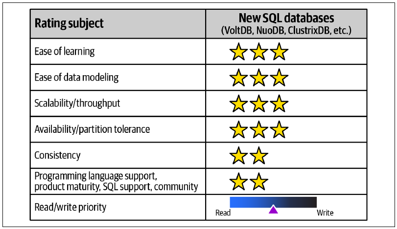
- 学习曲线的平缓程度
-
NewSQL 数据库类似关系型数据库，提供 SQL 接口、水平扩展和 ACID 合规性，因此学习相对容易。某些产品只以数据库即服务形式提供，这可能增加学习难度。
- 数据建模的容易程度
-
NewSQL 与关系型数据库相似，数据建模为很多人所熟悉，容易掌握。额外难点是分片设计，它允许把分片数据放置在不同地理位置。
- 可扩展性与吞吐量
-
NewSQL 数据库专为分布式系统的水平扩展而设计，可以拥有多个活动节点；关系型数据库通常只有一个活动领导节点，其余节点作为跟随者。多个活动节点使 NewSQL 具有很强的可扩展性和更高吞吐量。
- 可用性与分区容忍性
-
多活动节点设计可以显著提高可用性和分区容忍性。CockroachDB 是一种流行的 NewSQL 数据库，可以承受磁盘、计算机和数据中心故障。
- 一致性
-
NewSQL 支持强一致 ACID 事务，数据始终一致，使关系型数据库用户能够轻松迁移。
- 编程语言支持、产品成熟度、SQL 支持与社区
-
许多 NewSQL 数据库是开源产品，学习资源易于获得。部分产品还支持与现有关系数据库兼容的线协议，因而可以在不存在兼容性问题的情况下替代关系数据库。
- 读写优先级
-
NewSQL 的使用方式类似关系型数据库，但还能借助索引和地理分布改善读取或写入性能。
6.3.8 云原生数据库
随着云使用量增加，Snowflake、Amazon Redshift、Datomic 和 Azure Cosmos DB 等云数据库越来越流行。这些数据库可以减轻运维负担，提供透明成本，而且不需要前期投资，容易用于实验。图 图 6.32 展示了云原生数据库的评价。
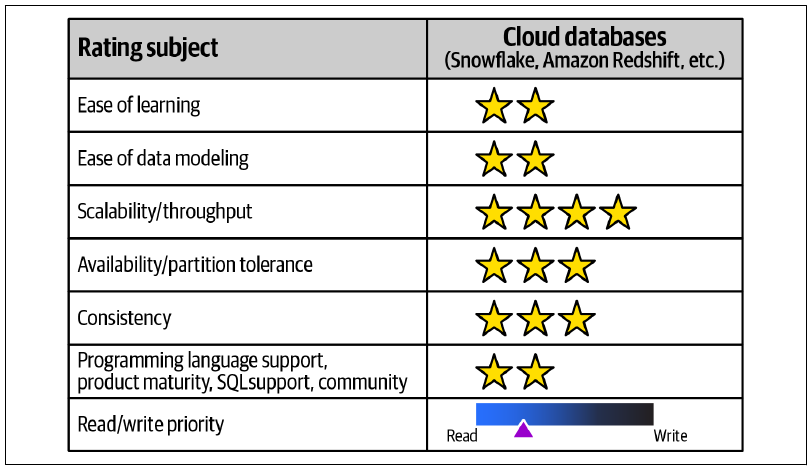
- 学习曲线的平缓程度
-
AWS Redshift 等云数据库类似关系型数据库，因而比较容易理解。Snowflake 提供 SQL 接口，但采用不同的存储和计算机制，需要一定练习。Datomic 的模型完全不同，使用不可变原子事实。因此，学习曲线会因具体产品而异。
- 数据建模的容易程度
-
Datomic 没有表的概念，也无须预先定义属性，但必须定义单个属性的性质，而实体可以拥有任意属性。Snowflake 和 Redshift 更多用于数据仓库负载。选择数据库时，必须理解该产品所提供的建模方式。
- 可扩展性与吞吐量
-
这些数据库都只在云端提供，因此扩展相对简单，只要付出相应成本，资源就能自动分配。此类决策的主要权衡通常是价格。
- 可用性与分区容忍性
-
Datomic 等数据库采用生产拓扑部署时具有高可用性，没有单点故障，并由广泛缓存提供支持。Snowflake 可以跨区域和账户复制数据库。这个类别中的其他数据库也提供多种高可用配置。例如 Redshift 运行在单个可用区，需要部署多个集群才能支持更高可用性。
- 一致性
-
Datomic 使用存储引擎把数据块保存在块存储中，并支持 ACID 事务。Snowflake 和 Redshift 等其他数据库同样支持 ACID 事务。
- 编程语言支持、产品成熟度、SQL 支持与社区
-
许多此类数据库较新，很难找到经验丰富的人员。实验还需要云账户，形成另一项门槛。云原生数据库虽然减轻了运维 DBA 的工作量，却给开发人员带来更陡的学习曲线。Datomic 的示例和存储过程使用 Clojure，不了解 Clojure 可能成为采用障碍。
- 读写优先级
-
这类数据库既可以处理读取密集型负载，也可以处理写入密集型负载。Snowflake 和 Redshift 更偏向数据仓库负载，因此以读取为主；Datomic 则可借助不同索引支持两类负载，例如优先使用 EAVT，即实体、属性、值、事务顺序。
6.3.9 时间序列数据库
物联网、微服务、自动驾驶汽车和可观测性的发展，使时间序列分析需求大幅增长。这一趋势催生了针对时间窗口内数据点序列进行存储优化的数据库，让用户可以跟踪任意时间跨度内的变化。图 图 6.33 展示了时间序列数据库的评价。
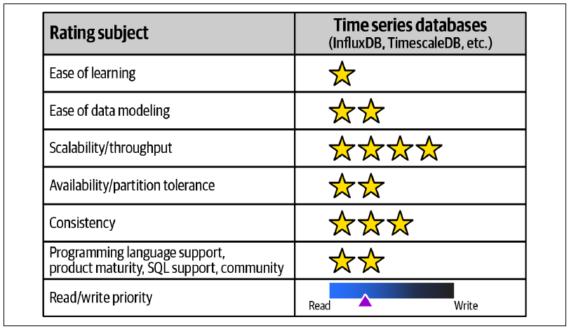
- 学习曲线的平缓程度
-
时间序列数据通常容易理解，每个数据点都附带时间戳，而且数据几乎总是插入，通常不会更新或删除。习惯其他数据库后，需要重新适应只追加操作，因为其他数据库允许通过更新纠正错误数据。InfluxDB、Kx 和 Timescale 都是流行的时间序列数据库。
- 数据建模的容易程度
-
时间序列数据库的核心概念，是分析数据随时间发生的变化。例如，在 Sysops Squad 中，可以把工单对象的变更存入时间序列数据库，并用变更时间戳和
ticket_id加标签。一个标签中放入多条信息被视为不良做法。例如，ticket_status=Open, ticket_id=374737优于ticket_info=Open.374737。 - 可扩展性与吞吐量
-
Timescale 基于 PostgreSQL，可以使用标准扩展和吞吐量改进模式。InfluxDB 以集群模式运行时，可以使用管理元数据的元节点与存储实际数据的数据节点，改善扩展性和吞吐量。
- 可用性与分区容忍性
-
InfluxDB 等数据库通过元节点、数据节点和复制因子配置，提供更好的可用性与分区容忍选项。
- 一致性
-
使用关系型数据库作为存储引擎的时间序列数据库，可以通过 ACID 属性获得一致性；其他产品则可以使用
any、one或quorum一致性级别进行调整。更高一致性配置通常意味着更高一致性与更低可用性，必须对此进行权衡。 - 编程语言支持、产品成熟度、SQL 支持与社区
-
时间序列数据库近年来越来越流行，学习资源丰富。InfluxDB 等产品还提供类似 SQL 的 InfluxQL 查询语言。
- 读写优先级
-
时间序列数据库只追加数据，通常更适合读取密集型负载。
使用时间序列数据库时，数据库会为每次数据创建自动附加时间戳，数据还包含信息标签或属性。查询通常针对特定时间窗口中的某项事实。因此，时间序列数据库不是通用数据库。
表 表格 6.6 汇总本节讨论的数据库类型及相应流行产品。
| 数据库类型 | 产品 |
|---|---|
| 关系型 | PostgreSQL、Oracle、Microsoft SQL Server |
| 键值 | Riak KV、Amazon DynamoDB、Redis |
| 文档 | MongoDB、Couchbase、AWS DocumentDB |
| 列族 | Cassandra、Scylla、Amazon SimpleDB |
| 图 | Neo4j、InfiniteGraph、TigerGraph |
| NewSQL | VoltDB、ClustrixDB、SingleStore（原 MemSQL） |
| 云原生 | Snowflake、Datomic、Redshift |
| 时间序列 | InfluxDB、kdb+、Amazon Timestream |
6.3.10 Sysops Squad 案例：多语言数据库
12 月 16 日，星期四，16:05
团队已经从 Sysops Squad 单体数据库中形成数据领域。Devon 注意到，“调查”数据领域非常适合从传统关系型数据库迁移到使用 JSON 的文档数据库。不过，数据架构负责人 Dana 不同意，希望继续把这些表保留为关系型。
“我完全不同意，”Dana 说，“调查表过去一直以关系表形式正常工作，我看不出改变的理由。”
“实际上，”Skyler 说，“如果系统最初开发时你们就和我们讨论过，就会知道从用户界面角度看，用关系数据处理客户调查这样的内容非常困难。所以我不同意。关系表对你来说可能很好，但从用户界面开发角度看，处理调查的关系数据一直是一个主要痛点。”
“看吧，事实就是这样，”Devon 说，“这正是我们需要把它改成文档数据库的原因。”
“你似乎忘了，我是公司的数据架构师，最终要对所有这些不同数据库负责。你们不能随便往系统里增加数据库类型。”Dana 说。
“但那会是更好的解决方案。”Devon 说。
“抱歉，我不会为了让 Skyler 更容易维护用户界面，就给数据库团队带来如此大的冲击。事情不是这样运作的。”
“等一下，”Skyler 说，“我们不是都同意过吗？当前单体 Sysops Squad 应用的问题之一，就是开发团队与数据库团队合作得不够紧密。”
“是的。”Dana 说。
“那我们就开始合作，一起想清楚这个问题。”Skyler 说。
“好吧，”Dana 说，“但你和 Devon 必须给出充分有力的理由，证明为什么应该引入另一种数据库。”
“没问题，”Devon 说，“我们马上开始。”
Devon 和 Skyler 知道，文档数据库更适合客户调查数据，却不确定怎样建立足以说服 Dana 的理由。两人都认为这在一定程度上属于架构问题，因此 Skyler 建议找 Addison 帮忙。Addison 同意，并安排与 Sysops Squad 产品负责人 Parker 开会，确认把客户调查表迁移到文档数据库是否具有业务理由。
“谢谢你来参加会议，Parker，”Addison 说，“正如之前提过的，我们正在考虑改变客户调查数据的存储方式，有几个问题想问你。”
“这正是我同意开会的原因之一，”Parker 说，“客户调查一直是营销部门和我的主要痛点。”
“什么？”Skyler 问，“你的意思是？”
“即使是最小的客户调查变更请求，你们需要多久才能完成？”Parker 问。
“从数据库方面看不算太糟，”Devon 说，“新增问题就增加一列，或者修改答案类型。”
“等一下，”Skyler 说，“抱歉，但即使只增加一个问题，对我来说也是重大变更。你们不知道查询所有关系数据并在用户界面渲染客户调查有多困难。所以我的答案是：需要很长时间。”
“听着，”Parker 说，“在业务这边，即使最简单的变更也要你们花上好几天，这让我们非常沮丧，完全不可接受。”
“我想我可以帮忙，”Addison 说，“Parker，你的意思是，客户调查经常变化，而实施变更花费的时间太长？”
“没错，”Parker 说，“营销部门不仅希望客户调查更灵活，也希望 IT 部门响应得更快。他们经常不提交变更请求，因为知道最终只会感到挫败，还会产生计划外成本。”
“如果我告诉你，缺乏灵活性、变更响应缓慢完全与存储客户调查所用的技术有关；只要改变数据存储方式，就能显著改善灵活性和变更请求响应时间，你会怎么想？”Addison 问。
“那我和营销部门都会成为世界上最快乐的人。”Parker 说。
“Devon、Skyler，我想我们找到业务理由了。”Addison 说。
业务理由确立后，Devon、Skyler 和 Addison 说服 Dana 使用文档数据库。接下来，团队必须为客户调查数据找出最佳结构。图 图 6.34 展示了现有关系数据库表。每份客户调查包含两张主要表：“调查”表和“问题”表，两者为一对多关系。
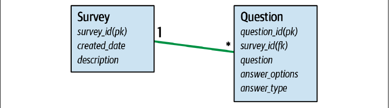
图 图 6.35 展示了每张表中的示例数据，其中“问题”表包含问题内容、答案选项和答案的数据类型。
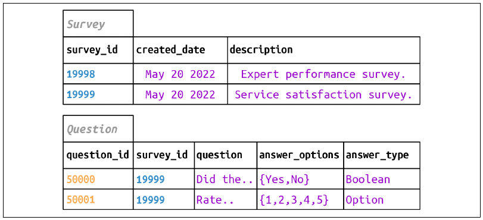
“在文档数据库中建模调查问题，基本上有两个选择，”Devon 说，“使用单一聚合文档，或者把聚合拆开。”
“怎么知道应该采用哪个？”Skyler 问。开发团队终于开始与数据库团队合作寻找统一方案，她对此很满意。
“我有办法，”Addison 说，“两种都建模，直观看看各自权衡。”
Devon 向团队展示了单一聚合方案，如图 图 6.36 和示例 6-3 所示。调查数据及全部相关问题数据都保存在同一个文档中，因此只需一次 get 操作就能从数据库取得整份客户调查，让 Skyler 和其他开发人员很容易使用这些数据。
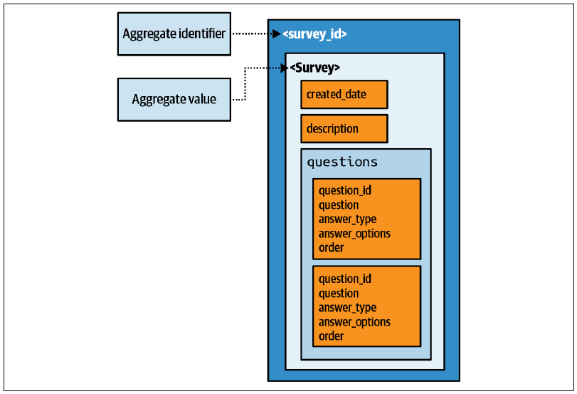
示例 6-3：把子项嵌入单一聚合设计的 JSON 文档
{
"survey_id": "19999",
"created_date": "Dec 28 2021",
"description": "Survey to gauge customer...",
"questions": [
{
"question_id": "50001",
"question": "Rate the expert",
"answer_type": "Option",
"answer_options": "1,2,3,4,5",
"order": "2"
},
{
"question_id": "50000",
"question": "Did the expert fix the problem?",
"answer_type": "Boolean",
"answer_options": "Yes,No",
"order": "1"
}
]
}“我非常喜欢这种方式，”Skyler 说，“我基本不必再担心自己在用户界面中聚合数据，只需要把取得的文档直接渲染到网页上。”
“是的，”Devon 说，“但数据库一侧会增加工作量，因为每份调查文档都会复制问题。你知道，这就是复用问题。来，我给你看看另一种方式。”
Skyler 解释，另一种思考聚合的方式，是拆开调查和问题模型，让问题可以独立操作，如图 图 6.37 和示例 6-4 所示。这样，同一个问题可以在多份调查中使用，但检索和渲染会比单一聚合更困难。
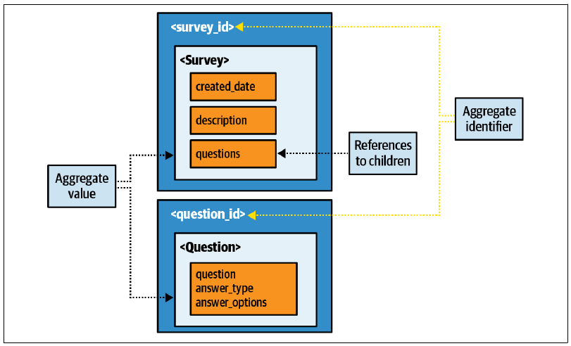
示例 6-4：拆分聚合，并由父文档引用子文档的 JSON
{
"survey_id": "19999",
"created_date": "Dec 28",
"description": "Survey to gauge customer...",
"questions": [
{"question_id": "50001", "order": "2"},
{"question_id": "50000", "order": "1"}
]
}
{
"question_id": "50001",
"question": "Rate the expert",
"answer_type": "Option",
"answer_options": "1,2,3,4,5"
}
{
"question_id": "50000",
"question": "Did the expert fix the problem?",
"answer_type": "Boolean",
"answer_options": "Yes,No"
}大部分复杂性与变更问题都位于用户界面，因此 Skyler 更喜欢单一聚合模型。Devon 则偏好多聚合，以避免在每份调查中复制问题数据。不过 Addison 指出，系统只有五种调查类型，每个产品类别一种，而且大多数变更只是增加或删除问题。
团队讨论了权衡，一致同意用少量问题数据重复换取用户界面一侧更容易变更和渲染。由于这个决定很困难，而且数据结构会发生变化，Addison 创建了一份 ADR，记录决策理由。
背景
工作完成后，客户会收到一份调查，系统在网页上渲染调查，供客户填写和提交。根据维修或安装的电子产品类型，客户会收到五种调查之一。目前调查保存在关系型数据库中，团队希望使用 JSON 把它迁移到文档数据库。
决策
客户调查将使用文档数据库。
营销部门要求客户调查变更具有更高灵活性和及时性。迁移到文档数据库不仅可以提高灵活性，也能缩短客户调查变更所需的时间。
使用文档数据库可以简化客户调查用户界面，并更好地支持调查变更。
后果
由于采用单一聚合，当公共调查问题被更新、增加或删除时，需要修改多份文档。
把数据从关系型数据库迁移到文档数据库期间，调查功能必须停止运行。